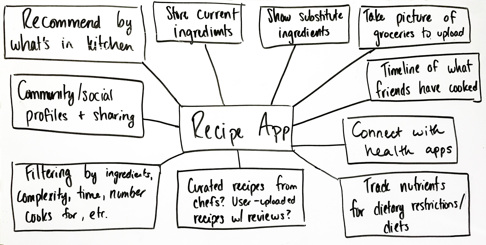
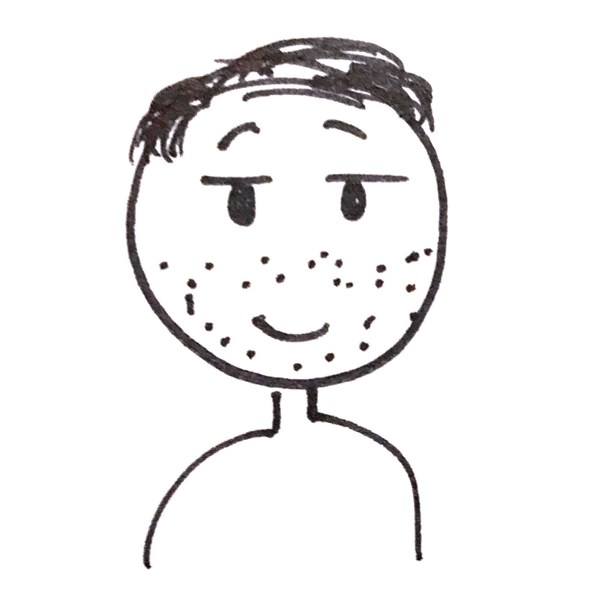
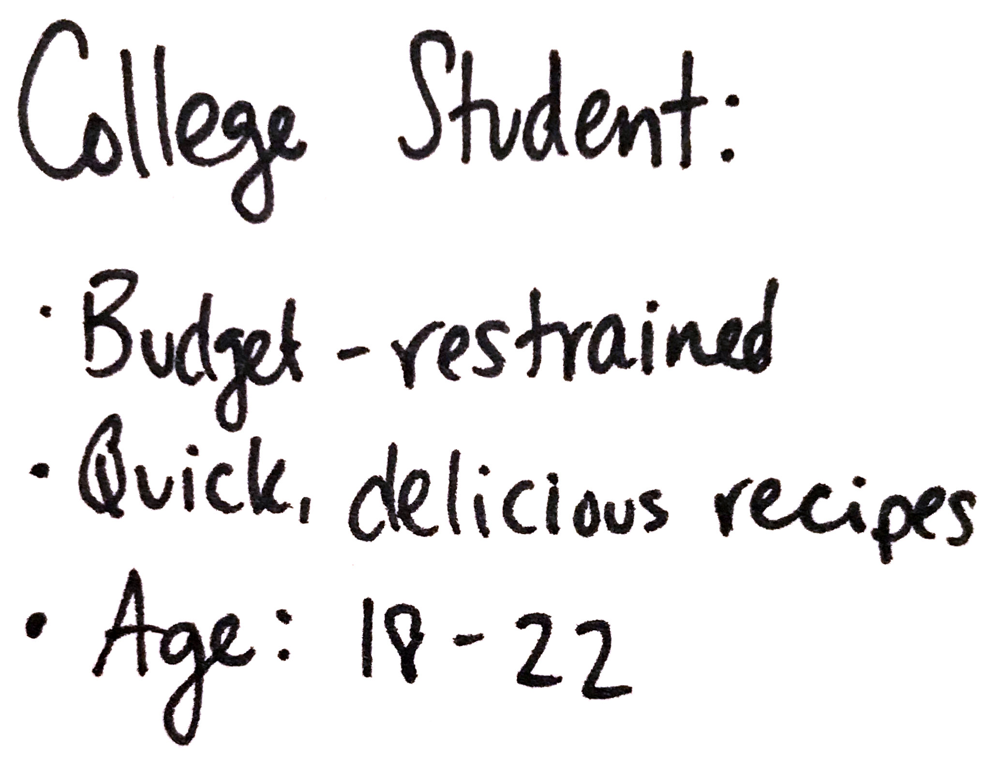
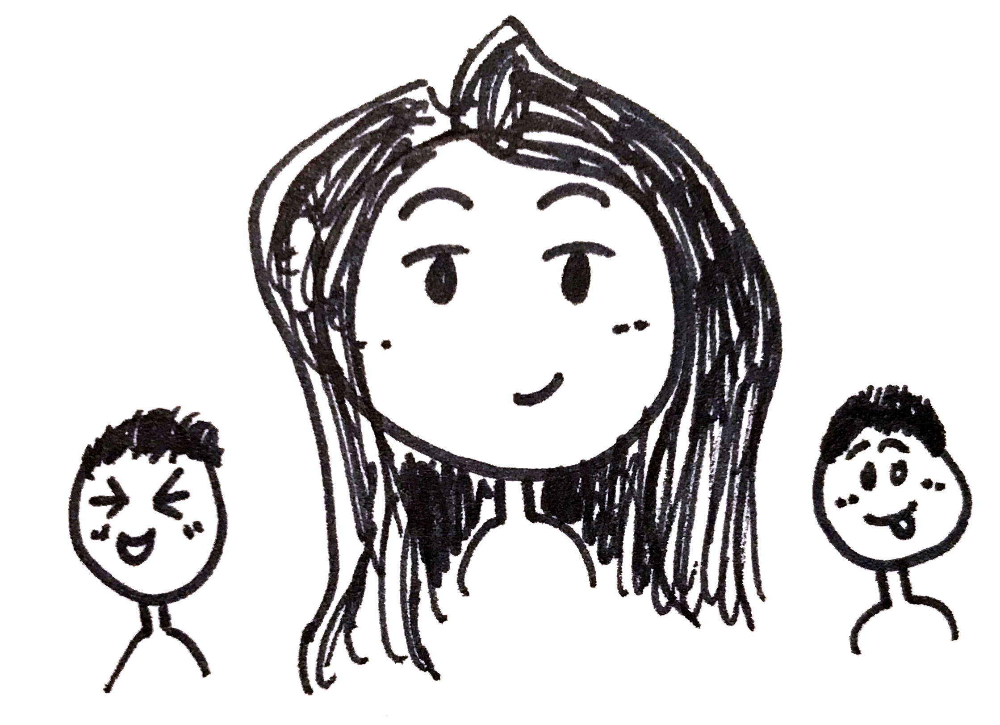
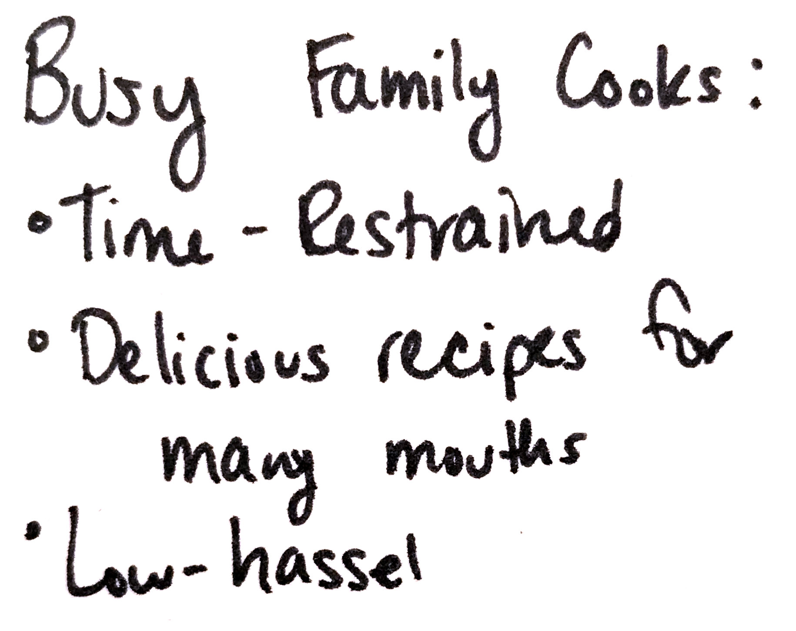
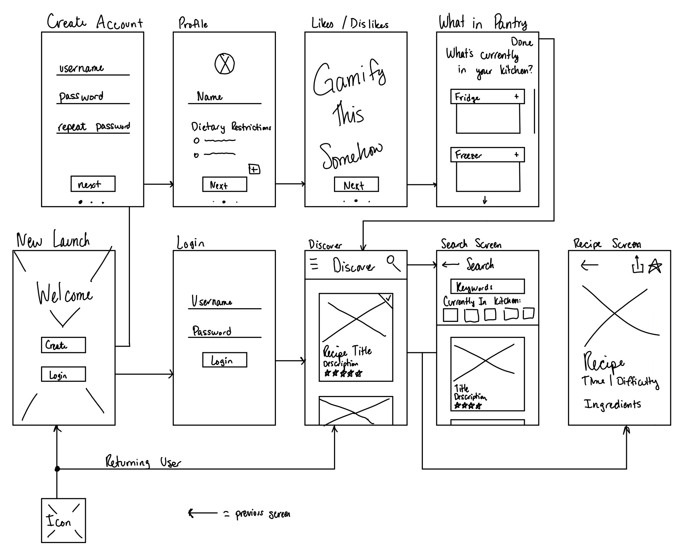
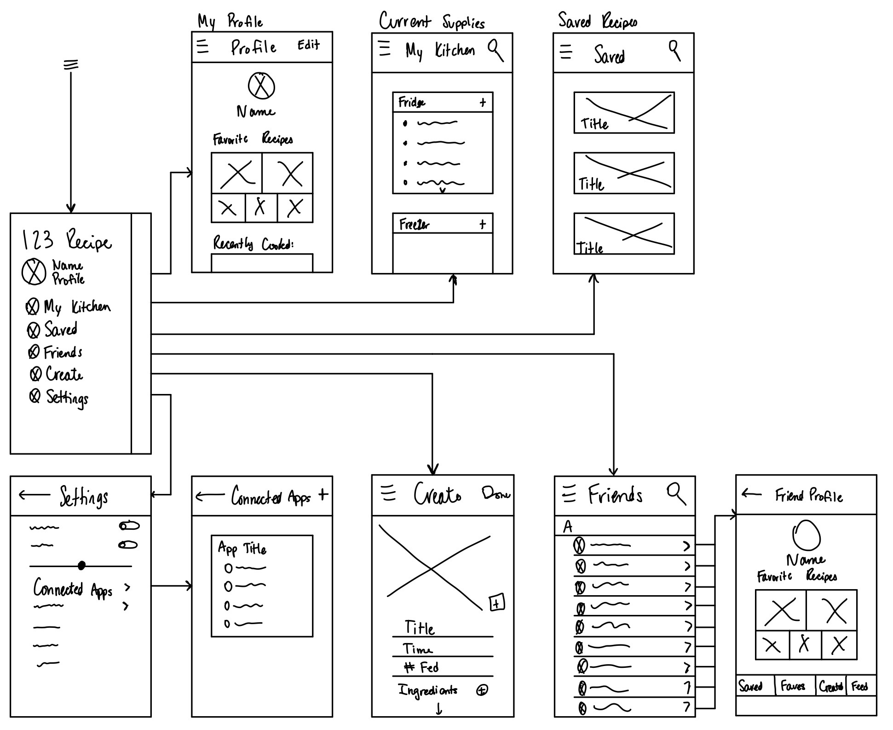
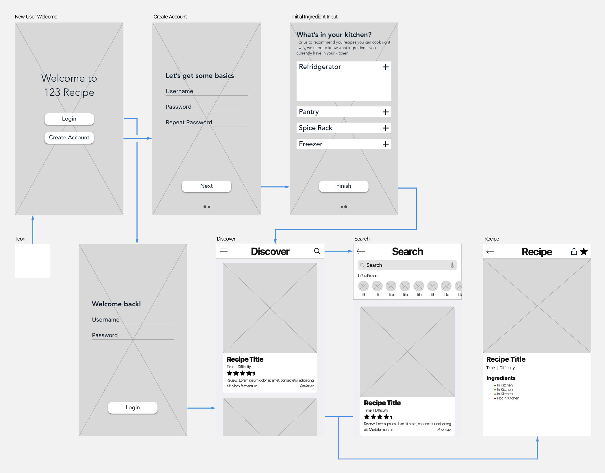
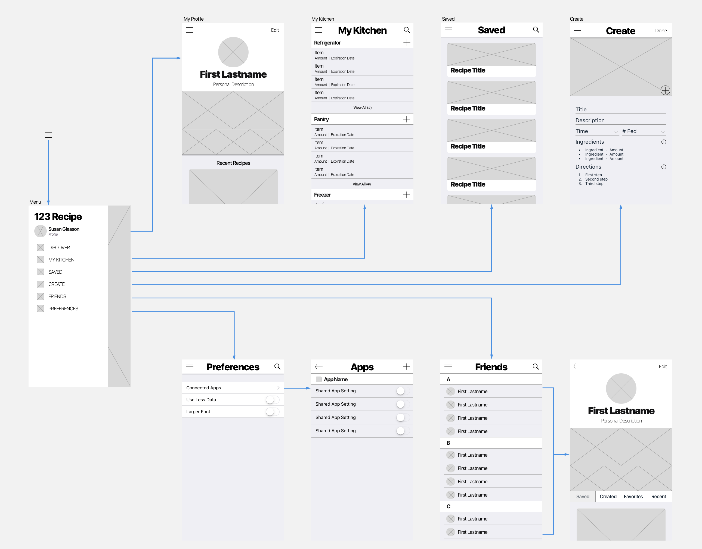

overview
For my first entrepreneurship class, I worked with a small group to take an idea through the business and product development process.
Team
For my first entrepreneurship class, I worked with a small group to take an idea through the business and product development process.The team consisted of five people from unique majors: Mechanical Engineering, Management, Mathematics, Aerospace Engineering, and Computer Science. This diversity of thought led to more ideas, perspectives, and work habits that created a fantastic learning experience.
My Contributions
For this project, my main focus was product development. I worked to ensure that our product provided a usable, beneficial service to potential users. Through this, I conducted user interviews and research to refine our product idea, developed a minimum viable product, target market, wireframes, and final prototype mockups.
Additionally, I assumed the leadership role by organizing weekly group meetings and ensuring team members completed their work.
The Problem
We wanted to build a business on a mobile application. To start brainstorming, we looked at various markets and listed hindrances, annoyances, and grievances with various aspects of our everyday habits. We narrowed down our focus to the kitchen, and eventually to the recipe discovery process as a whole.
Concept
Our concept was simple: create a recipe app that recommends recipes based on what’s available in a user’s kitchen rather than popular recipes that require a trip to a grocery store. With this general idea in mind, we then used sticky notes to brainstorm ways to tackle this broad problem and refine it to a minimum viable product.

User Research
The next step was to conduct user interviews. We designed the questions to discover what products and services possible users currently use, what they do and do not like about these services, and if our application idea has any merit. I personally interviewed half of our 35 interviewees, and after aggregating the data, we found that an overwhelming majority of interviewees would use a service that recommends recipes based on what they own as long as it is simple to use, free, and allows them to share recipes with their friends and family.
Next, we used this data to determine our target users:

User Journey
At this point, our project required us to split and work on separate tasks, so I began developing a mockup of the application that incorporated the feedback and user research. After some time sketching and brainstorming, I developed the following user journey. I tried to think as a user of the application would, therefore choosing the most user-friendly approach to any problem.

Wire Frame
I next created wireframes. This allowed me to further think through unique aspects of the application and userflow. For example, I initially planned for the user to input their favorite types of food when creating an account, but as I began wireframing, I realized how redundant and unnecessary that screen is as the MyKitchen ingredients dictate a user's recommended recipes.

Prototype
Though the creating an app prototype was not a requirement for the class, I developed a prototype for the experience. Using the wireframes as a base, I first created a small style guide and then applied that guide to the various screens in the application.
The gifs are rather large files, so you can find them here: *Google Drive Link*
Conclusion
This project taught me the importance of user interviews and designing with empathy. Through the interviews, I learned invaluable information about what is important to potential users that guided my decision making process and led to an overall better, more user-friendly, in-demand application.